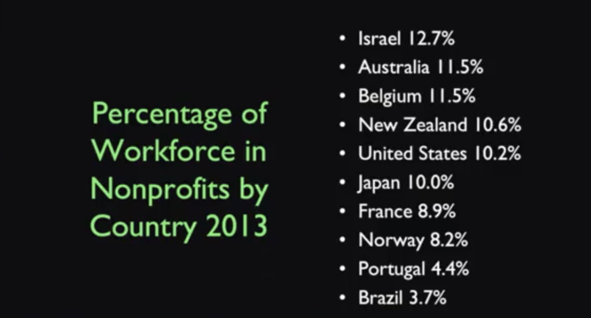

Margin Notes · Note 4
Financial Markets, Module 7
Nonprofits, Cooperatives, Philanthropy
In 2013, there were 1.41 million nonprofits in the US, their revenues amounted to 5.4% of the US GDP.
10.2% of the US workforce works in nonprofit organizations (including volunteers). This does not include government employees, which make up another 16.5% of the US workforce.


42% of all nonprofit organizations have a formal executive bonus system in place (as of 2007-8).
Benefit Corporations
These kinds of corporations are halfway between for-profit and non-profit, they can accumulate profits but must adopt a charter that states a social or environmental purpose it must pursue.
Critics of Modern Finance
Adair Turner largely criticised corporate debt in his book “Between Debt and the Devil”, stating that:
“Corporate debt is a kind of “economic pollution” that needs to be taxed.”
He is a member of the UK’s House of Lords.
Rana Foroohar, in her book, Makers & Takers (2016), criticised Apple for having borrowed so much money after Steve Jobs’s death in order to evade taxes. She claimed that the exploitation of tax law was inconsistent with creativity in business. Her book name suggests that the world is overrun by “Takers”, instead of “Makers”.
Oftentimes, founders and entrepreneurs do not get the required funding to launch their companies without the help of banks, crowdfunding gives some kind of a solution to this dilemma, by allowing the public to invest in ideas and startups directly.
The SEC declared in 2016 that you may only raise a maximum of $1 million per year, every year.
Sources
- Lecture slide: Robert Shiller, Financial Markets, Yale University.